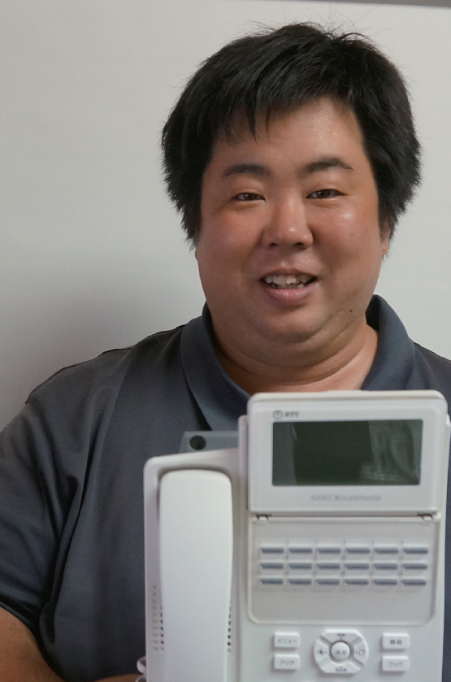
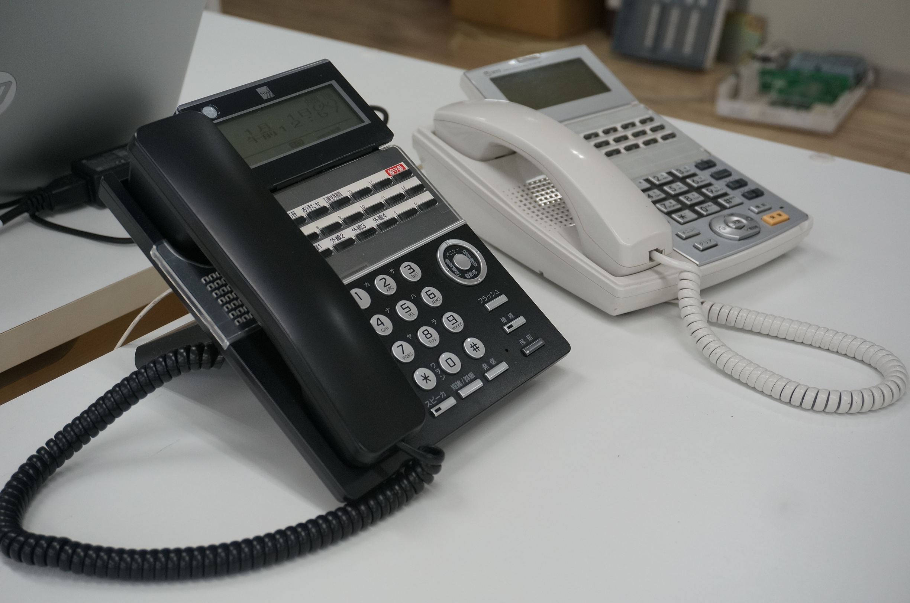

【建設業許可】愛知県知事許可第59951号電気通信業
【宅地建物取引業許可】愛知県知事許可第23116号
| 会社名 | 株式会社ユニバーサルエージェンシー |
|---|---|
| 代表者名 | 代表取締役 大橋 慶介 |
| 所在地 | 〒440-0038 愛知県豊橋市三ノ輪町2-83 |
| 連絡先 | TEL: 0532-64-4046 / FAX: 0532-64-2045 |
| 愛知県許可 | 建設業許可 第5991号 電気通信業 宅地建物取引業 第23116号 |
| 古物商許可番号 | 愛知県公安委員会許可 第543850201300号 |
| 国家資格 | 工事担任者： DD第二種「AL23A00001」 AI第二種「AH23A00001」 |
| 適格請求書発行事業者番号 | T7810898626889 |
| 事業内容 | ■中古ビジネスホン販売／取付工事 ■新品ビジネスホン販売／取付工事 ■防犯カメラ・監視カメラ販売／取付工事 ■ネットワーク構築／LAN配線工事／WiｰFi設置 ■ドアホン（インターホン）等電気通信設備工事全般 ■中古・新品複合機販売／取付工事 ■防犯セキュリティーシステム販売／取付工事 ■音響設備工事 ■ひかり回線、インターネット回線申込代行（電話回線） |

株式会社ユニバーサルエージェンシーの代表取締役社長の大橋慶介です。
ホームページをご覧いただきありがとうございます！
会社設立から電気通信工事を３０年で１７万件以上の現場の実績があります。まずはお電話やメールで問い合わせていただき、現地調査をさせてください！
そしてお見積り、ご注文をいただけましたら工事日程の調整等を経て施工をいたします。
このようにお客様のご相談をお聞きしたうえで施工いたします！施工後のトラブルなどがあったの保証対応など、親身にお付き合いをさせていただきますのでご安心ください！！
みなさまの通信環境、電話設備、ネットワーク環境、防犯対策、音響設備の工事のお役に立てるように精進してまいります。
| 昭和61年 | 電々公社（現ＮＴＴ）電話加入間 不動産 買取販売として三河商事開業 |
|---|---|
| 平成3年 | 通信部門法人化 （有）ユニバーサルエージェンシーとして名古屋市に電話工事部門、加入権買取販売部門を設立 |
| 平成5年 | ＤＤＩ（現ＫＤＤＩ）工事販売取引開始 日本テレコム（現ソフトバンク）工事 販売取引開始 |
| 平成6年 | 本社を現在の豊橋市に移転と同時に、ＮＴＴ系豊橋ＮＤＳと外線引き込み及びボタン電話設置工事取引開始 |
| 平成8年 | ＮＴＴ販売店の工事協力店としてビジネスホン工事開始 |
| 平成21年 | 日本電話施設（現ＮＤＳ）光アクセス設計を請負う |
| 平成24年 | 静岡県 浜松ＮＤＳとの局内 ＰＢＸ工事請負を開始 |
| 平成25年 | コミュファの工事会社、コムネットの工事協力店となる 光保守メンテナンスを行う |

お気軽にお問い合わせください
ビジネスホンのご相談窓口・平日9時～17時